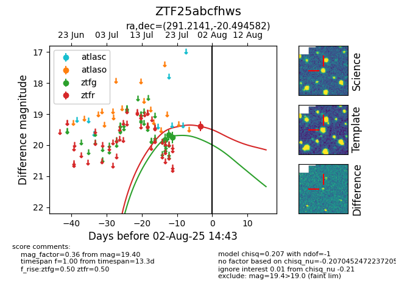

Target ZTF25abcfhws at 2025-08-02 14:43, see:
FINK: fink-portal.org/ZTF25abcfhws
Lasair: lasair-ztf.lsst.ac.uk/objects/ZTF25abcfhws
ALeRCE: alerce.online/object/ZTF25abcfhws
alt names
ZTF25abcfhws (ztf,fink)
coordinates:
equatorial (ra, dec) = (291.2141,-20.49458)
galactic (l, b) = (17.8618,-16.30663)
photometry
last ztfg=19.75, ztfr=19.40
3 ztfg, 1 ztfr detections
